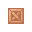
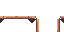
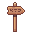
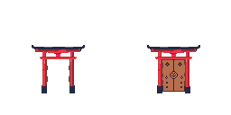
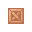
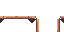
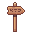
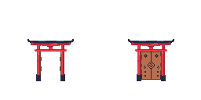

8/7/25 Week 1: Learning pixel art animations...
This week, I focused on learning the fundamentals of pixel art animation and implementing them in my game. I created a full animation set for my player character, including idle, run, jump, fall, climb, and push animations, each designed frame-by-frame and tested in Unity. I also learned how to build and organize a tileset, which I used to create my first playable environments. Using Unity’s animation controller and C# scripting, I successfully coded state transitions to ensure each animation responds accurately to player input and movement. Finally, I designed and tested the first two levels of the game, focusing on flow, platform placement, and basic climbing mechanics.
8/15/25 Week 2: Creating Levels and advancing gameplay
This week I focused on building out Levels 3–4 and tightening the animation system. For levels, I iterated on difficulty curves, introducing new hazards one at a time (spikes, and box puzzles). I refined tileset usage to avoid collider bugs. On the animation side, I cleaned up the Animator state machine and transition conditions—smoothing swaps between idle/run/jump/fall/climb/push, fixing snap-backs on landings, and syncing footstep and ledge-grab events with animation timings. I also tweaked climb speed and push resistance.
8/22/25 Week 3: In-game mechanics
This week I focused on the small in game mechanics built into my game. This includes, pushable boxes, shooting traps, climbable ropes, gates, trapdoors. I drew sprites and implemented them into the game.
9/24/25 Week 4: Parallax Background, in game dialouge
This week I focused on making a parallax background to go with my game, I fixed some small bugs with the collider on the tilemap, and I made and animated a dialouge manager for my game.
 






